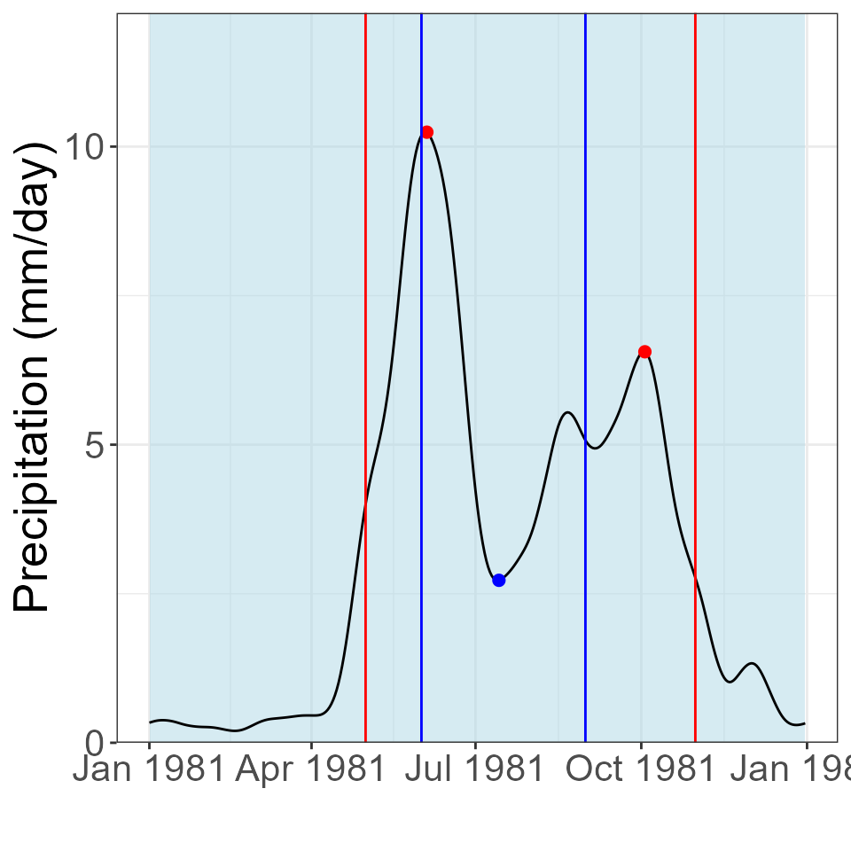

The msdrought package is designed to analyze one year of data at a time. For the AGU ’23 conference, a graphic was made that showcased the trends of the average rainfall across a set of years. Each day’s rainfall data across multiple years were averaged, then analyzed. For example, in a data set with precipitation data from 1981 to 1985, every day of the year (from January 1st to December 31st) had its rainfall data averaged (example: the precipitation values of 1-1-81, 1-1-82, 1-1-83, 1-1-84, and 1-1-85 were averaged), then put into a dummy xts to be analyzed. This vignette shows how that graphic was created.
Packages used in this vignette: terra,
lubridate, dplyr, xts, and
msdrought. These should all be installed.
The first step is to extract the relevant data from a SpatRaster.
data <- system.file("extdata", "prcp_cropped.tif", package = "msdrought") # This loads the data included in the package, but you would attach your own
infile <- terra::rast(data)
# Make a SpatRast for one point
lon <- -86.2621555581 # El Bramadero lon (from NicaAgua)
lat <- 13.3816217871 # El Bramadero lat (from NicaAgua)
lonLat <- data.frame(lon = lon, lat = lat)
# Set up precipitation data
location <- terra::vect(lonLat, crs = "+proj=longlat +datum=WGS84")
precip <- terra::extract(infile, location, method = "bilinear") |>
subset(select = -ID) |>
t()
precip[precip < 0] <- 0 # replace any negative (errant) values with zeroes
precip <- as.vector(precip)Because we will be using the msdGraph function, a year value will need to be provided. We will create a dummy year that will be used for the sake of plotting. This can be any year, but it is easiest to just use the first year in the data set.
# Find the average for each day of year
day_of_year <- lubridate::yday(terra::time(infile))
df <- data.frame(doy = day_of_year, precip = precip) |>
dplyr::group_by(doy) |>
dplyr::summarize(averagePrecip = mean(precip))Now, an averaged xts object can be created. This will display the data set’s average rainfall over the dummy year.
# Assemble the Timeseries, creating a dummy date column for the averaged year
ddates <- as.Date("1980-12-31") + unique(day_of_year)
x <- xts::xts(df$averagePrecip, order.by = ddates) Construct key date sequences and filter time series.
# Perform MSD calculations with the new xts
keyDatesTS <- msdrought::msdDates(time(x))
filterTS <- msdrought::msdFilter(x, window = 31, quantity = 2)Perform the MSD calculations.
duration <- msdrought::msdStats(filterTS, keyDatesTS, fcn = "duration")
#> Registered S3 method overwritten by 'quantmod':
#> method from
#> as.zoo.data.frame zoo
intensity <- msdrought::msdStats(filterTS, keyDatesTS, fcn = "intensity")
firstMaxValue <- msdrought::msdStats(filterTS, keyDatesTS, fcn = "firstMaxValue")
secondMaxValue <- msdrought::msdStats(filterTS, keyDatesTS, fcn = "secondMaxValue")
min <- msdrought::msdStats(filterTS, keyDatesTS, fcn = "min")
allStats <- msdrought::msdMain(x)Create a plot of the MSD pattern for the year.
suppressWarnings(msdrought::msdGraph(x, 1981))